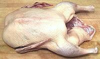
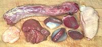
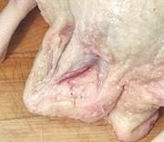
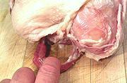
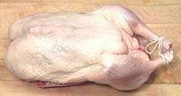
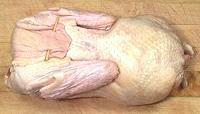
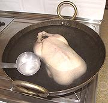
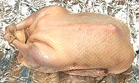
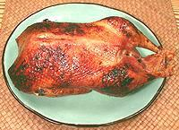
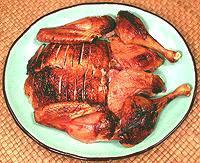

SAFARI
Users
- General Disucssion
- Equipment You Will Need
- Planning & Buying
- Procedure - step by step
- Carving your Duck
- Safety Tips
General Discussion
The duck you buy at the market, the Pekin Duck, was developed in China around 950 CE and brought to Long Island in the USA over a century ago. Roasting a duck is different from roasting a chicken or turkey for a number of reasons:
- You're not going to have to decide whether fresh or frozen because you'll probably only be able to get frozen.
- You aren't going to have to ponder size so much because all the market will have is likely between 4 and 5-1/2 pounds, though I have seen a few as heavy as 7 pounds.
- You need not make decisions about sex (the duck's, not your own - can't help you there) because they aren't labeled by gender.
- Salting and/or brining are not needed.
- Time and finish temperature aren't as critical because a duck isn't going to end up with cardboard breasts if you run 5 degrees over.
- Ducks are seldom stuffed, and when they are they are stuffed with fruit. Turkey style stuffings would become saturated with fat.
- Duck roasts to a much darker shade.
- No sane person tries to roast vegetables in the same pan with a duck.
Equipment You Will Need
- An
Oven
with good temperature control and sufficient room for the duck and its roasting pan. - A
Roasting Pan
. Highly preferred are shallow pans fitted with a V-rack, and with convenient handles on the pan and the V-rack. Disposable aluminum pans are very dangerously flimsy, and leave the duck soaking in oil. Aluminum foil
- wide.Rubber Gloves
- these are for turning the Duck during roasting, and removing the Duck from the V-rack after roasting. Silicone oven gloves work but I simply won't pay the price asked for them, and they're too stiff anyway. Get the thickest set of flock lined rubber dishwashing gloves they have at your local market in size "extra large". These will do just fine if you are organized and work efficiently.Meat Thermometer
with a probe long enough to penetrate to the center of the duck thigh. Best is one with a probe on a long cable so you can monitor the temperature without opening the oven.Kitchen twine
for tying the legs together.Bamboo skewers
for pinning neck fat and wings.Basting brush
for the final glaze.Knives
Forget the carving knife - the best knives for working with duck are a razor sharp boning knife and a santoku or similar thin sharp slicing knife. If you intend to cut it up Chinese style you'll need a razor sharp Chinese cleaver knife and a soft faced mallet to drive it through.
Planning & Buying
Planning
A 5 pound duck, with a salad and a substantial side, will serve four. You don't have to plan as far ahead as with turkey or goose because duck will thaw pretty quickly and doesn't need salting or brining like a turkey.Buying:
You'll probably be buying your duck frozen - unless you buy direct from a duck farm or live poultry vendor. The best place to buy ducks is in the frozen meat section of a large Asian market - they'll have plenty of ducks and the price will likely be much lower than in supermarkets.Procedure
This recipe follows French practice - except I do the scalding Chinese way which I consider superior, and cooking times are American - the French like their ducks a bit on the pink side, which would give our USDA bacteriophobes fits.
The object of the temperature changes is to first quickly set the skin so it is porous, then cook at a low temperature for a fairly long time, and finally brown and crisp at a high temperature. If the low temperature phase isn't long enough the duck will be very tough.
|
Click Image for Larger










|
Notes
|
Carving your Duck
- Don't attempt to carve at the table - duck is just too awkward for that - you'll look foolish.
- As with a turkey you start by bending back the wings, then thighs and cutting them free where they meet the body, then cut the tendons to free the joint. The joints are much tighter than on a chicken or turkey and take some effort to dislodge and cut free.
- When cutting from the body the meat clings hard to the bones and the bone structure is convoluted and the whole thing is dark which makes it more difficult to see what you're doing. Use a small sharp boning knife, not a carving knife.
- Cut the breasts away from the breastbone (if you haven't already removed it). You'll find the keel is very shallow and the bone nearly horizontal which makes this a little more difficult than with chicken. Once you have the breasts off you're about done - there's just a little more meat for picking off the body.
- Once you've disassembled your duck you can slice the breasts - and do slice fairly thin because duck is chewier than turkey. A thin razor sharp santoku is a much better tool for this than a conventional slicing knife. The flesh is firm and will slice well without breaking up. The "tenderloin" under the main breast will come completely loose - it has almost no adhesion.
- The second joint of the wing is so small it isn't worth separating the wing into two pieces.
- Once you've got it all sliced up, arrange the slices on a platter, perhaps roughly in the form of the duck as shown in the photo.
- If you wish you can debone the legs and thighs. The legs don't have tendon problems like turkey so they debone quite easily.
- Unlike chicken or turkey, it matters little which parts go to whom. There's no white meat and all parts taste pretty much the same - but duck is chewier so wings and legs should not go to people with bad teeth.
Chinese Way:
Bones are not removed - the Chinese are certain meat on the bone is juicier. Remove the leg-thigh pieces and wings as noted above. Cut away the back from the breast side - this is best done with your kitchen shears.
Chop breasts, legs, thighs and wing joints into slices, generally 1-1/2 inches wide and maybe a bit thinner for the breast. This chopping is best done with a razor sharp Chinese cleaver.
You're probably not a Chinese chef born with a cleaver knife in your hand, so don't try to do this free-hand. Carefully position the sharp edge of the knife at the point you want to cut, then drive the cleaver knife through with a blow from a soft faced mallet (plastic, wood or hard rubber). Preferably drive it through with a single blow to minimize bone splinters.
Safety Tips
- Be prepared to handle dangerous quantities of very hot oil. The roasting pan must always be handled with great care lest it spill. Safe and proper basting tools should be used.
- Observe cooking temperatures given above and take them seriously. Harmful bacteria multiply very rapidly at temperatures between 40°F and 140°F, a range your duck will be in for most of the cooking time.
- Do not let an uncooked duck come in contact with any other food.
- When handling an uncooked duck, do not handle any other food until you have cleaned up all surfaces, tools and your hands, preferably using a little bleach or a mildly disinfecting cleanser.
- The USDA recommends that leftovers should be in the refrigerator within 2 hours of coming out of the oven. In general, that's just not going to happen, but try to keep close. If there are large amounts store in multiple smaller batches so the temperature will drop quickly.